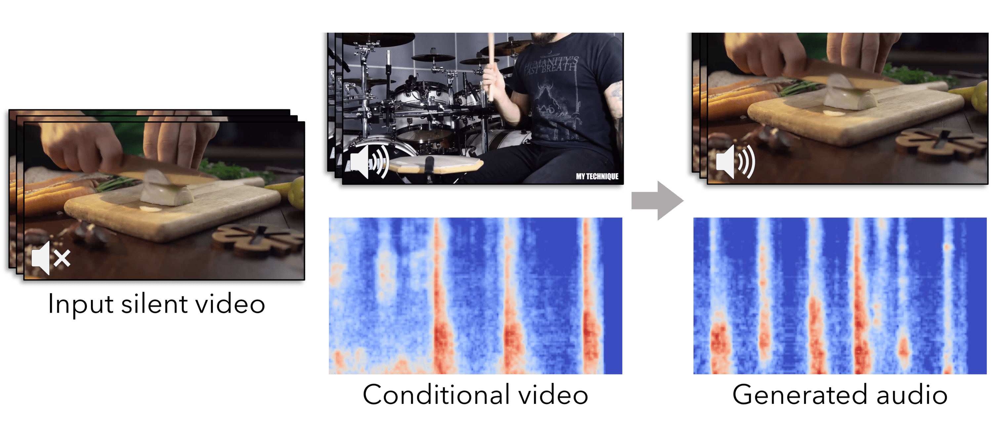
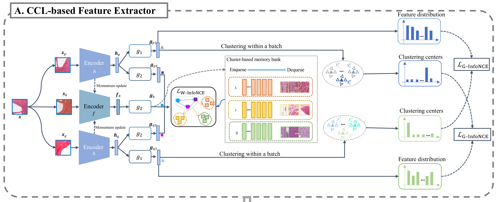

Bio
I am a second year BME Ph.D. student at Yale University, advised by Prof. Nicha C. Dvornek. Before that, I got my Bachelor's degree in CS at the University of Michigan, Ann Arbor, advised by Prof. Andrew Owens, and another Bachelor's degree in ECE at Shanghai Jiao Tong University. My research interest lies in the computer vision, multi-modality learning, and medical image analysis. I am always thrilled to work on the questions that address real-world needs.
Email: yuexi.du@yale.edu
News
June 2023
I'll join Nicha's Group as a Ph.D. student from next semester and working on DBT data and Breast cancer.
February 2023
Our new work "Conditional Generation of Audio from Video via Foley Analogies" with Andrew is accepted by CVPR 2023!
January 2023
Our work "RetCCL: Clustering-guided contrastive learning for whole-slide image retrieval" is now available on Medical Image Analysis (IF=10.9)!
January 2023
I will rotate at Prof. John Onofrey's lab this semester and working on rotational invariant feature extractor!
September 2022
I will join Yale University as a Ph.D. student major in BME!
Work Experience

Tencent AI Lab - AI Healthcare Group
Dr. Xiao Han, M.Sc Sen Yang
Algorithm R&D Intern. Work on pathological image selfsupervised representation learning and fast Whole-Slide Image(WSI) search system.
Publications

Conditional Generation of Audio from Video via Foley Analogies
CVPR 2023

Teaching
ENAS 912
Biomedical Image Processing and Analysis. Teaching Fellow. Winter 2023 at Yale. With James Duncan and Lawrence Staib
EECS 442
Computer Vision. Instructor aide. Spring 2022 at UM. With David Fouhey
VR 246
Introduction to Comics & Visual Art. Teaching Assistant. Spring 2021 at SJTU UMJI. With Jeolle Tybon
VE 101
Introduction to Computer & Programming. Teaching Assistant. Winter 2020 at SJTU UMJI. With Jigang Wu